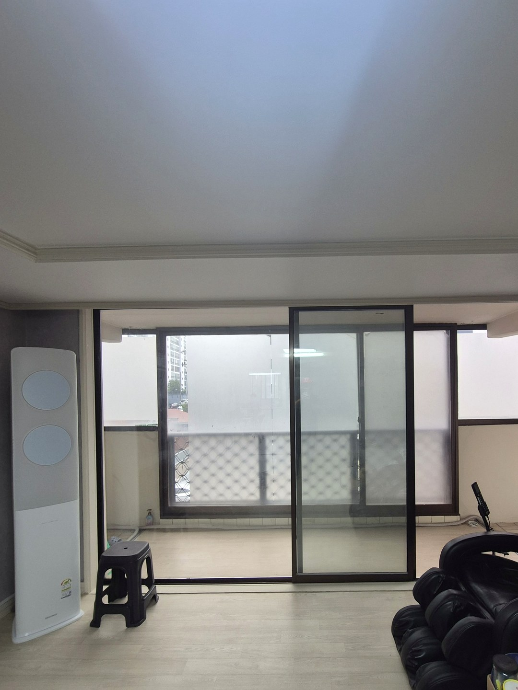
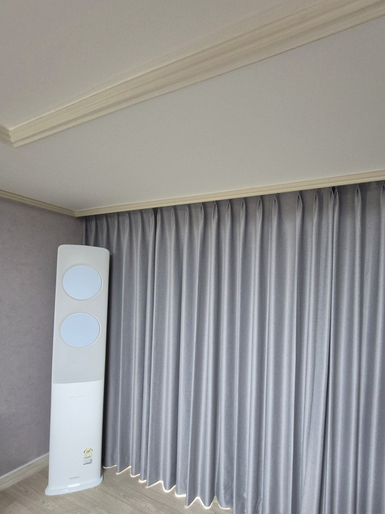
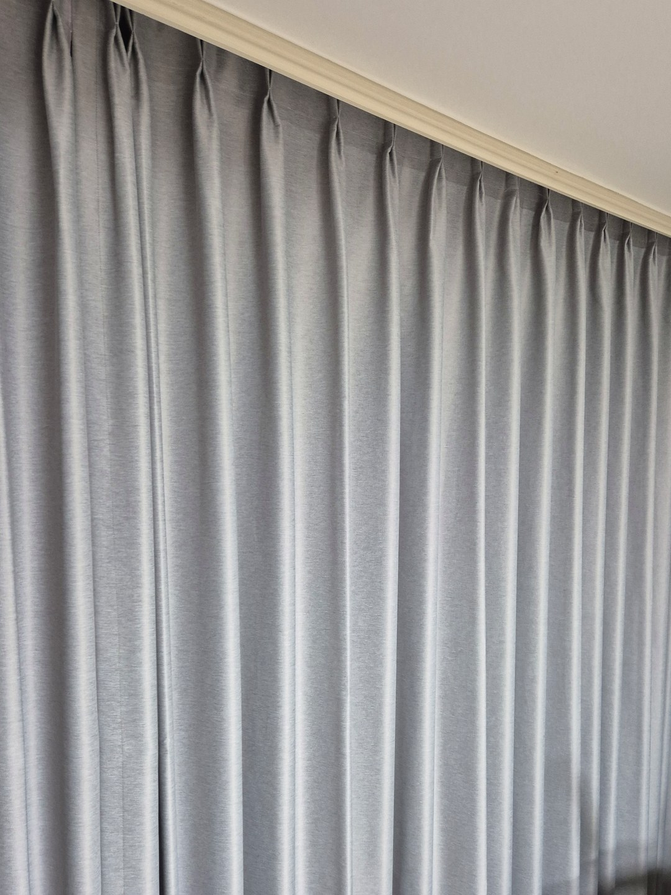
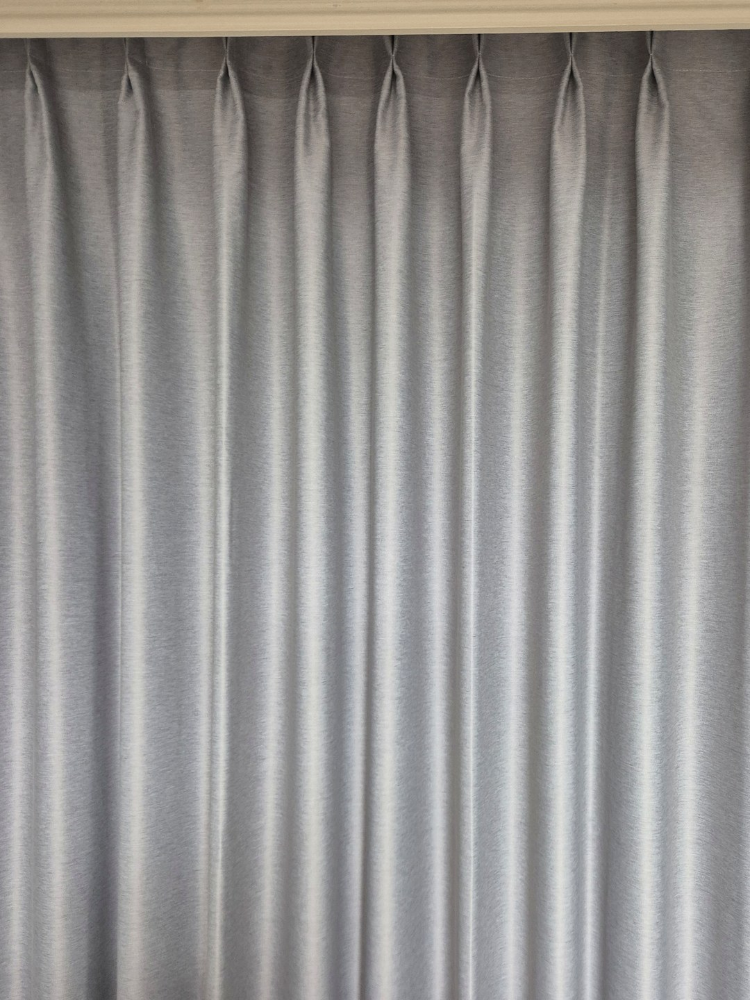
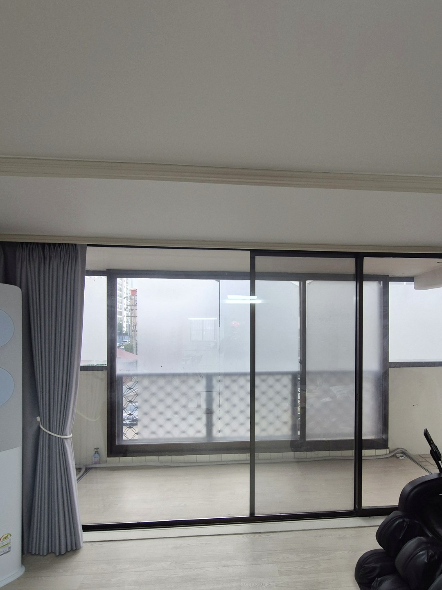

2026년 9월 18일 시공
울진 아파트 거실
형상기억 나비주름 암막커튼 시공후기

울진의 한 아파트 거실 커튼 시공입니다.
원단은 회색 암막, 주름은 나비주름, 여기에 형상기억 가공을 더했습니다.
겉으로 보기엔 평범한 회색 커튼이지만, 주름이 떨어지는 모양을 위해 두 단계를 더 거친 커튼입니다.
시공 전 — 베란다 창이 거실 한 면을 차지하는 구조
이 거실은 베란다로 이어지는 큰 창이 한쪽 벽을 거의 다 쓰고 있었습니다.
이런 거실은 커튼을 치는 순간 창이 아니라 커다란 천 한 장이 벽처럼 보이게 됩니다.
면적이 넓은 만큼 주름이 조금만 흐트러져도 거실 전체가 어수선해 보입니다.

나비주름을 고른 이유
나비주름은 커튼 윗단을 일정한 간격으로 묶어 박아서 주름을 세우는 방식입니다.
주름 사이 간격이 자로 잰 듯 맞아서 넓은 창에서도 리듬이 흐트러지지 않습니다.
원단이 넉넉히 들어가 닫아 두었을 때 판판하게 펴지지 않고 입체감이 남는 것도 장점입니다.

형상기억 가공을 더한 이유
무게가 있는 암막 원단은 걸어 두면 아래쪽이 점점 벌어지려는 성질이 있습니다.
위는 나비주름으로 촘촘한데 아래는 넓게 퍼지면 커튼이 사다리꼴처럼 보입니다.
형상기억은 주름을 잡은 채로 열을 가해 원단에 그 모양을 새겨 두는 가공입니다.
덕분에 걷었다 다시 쳐도 주름이 같은 자리로 돌아오고, 위아래 폭이 고르게 유지됩니다.


길이는 바닥에 살짝 닿게
거실 커튼은 길이가 짧으면 아래로 빛이 새고, 너무 길면 바닥에 끌려 밑단이 금방 더러워집니다.
이 현장은 천장 몰딩 바로 아래에서 시작해 바닥에 거의 닿는 길이로 맞췄습니다.
천장부터 바닥까지 한 줄로 떨어지면 거실 층고가 실제보다 높아 보이는 효과도 있습니다.
걷어 둔 모습
낮에는 커튼을 양옆으로 모아 끈으로 묶어 두시면 베란다 창이 그대로 열립니다.
형상기억이 되어 있어 모아 둘 때도 주름이 한 방향으로 가지런히 접힙니다.
회색은 흰 벽과 밝은 바닥 사이에서 차분하게 무게를 잡아 주는 색이라 거실 가구와도 부딪히지 않습니다.

미리 알려 드리는 것
형상기억은 가공이 한 번 더 들어가서 비용과 제작 기간이 조금 늘어납니다.
뜨거운 물 세탁이나 건조기는 잡아 둔 주름을 풀 수 있으니 피하시는 편이 좋습니다.
대신 넓은 거실 창처럼 커튼이 눈에 크게 띄는 자리라면 그 차이가 오래 보입니다.
울진·경북 동해안 커튼 상담
거실 창 사진과 대략의 가로·세로 길이를 보내 주시면 원단과 주름 방식을 같이 정해 드립니다.
울진은 경북 담당 실장이 직접 실측하고 설치합니다.